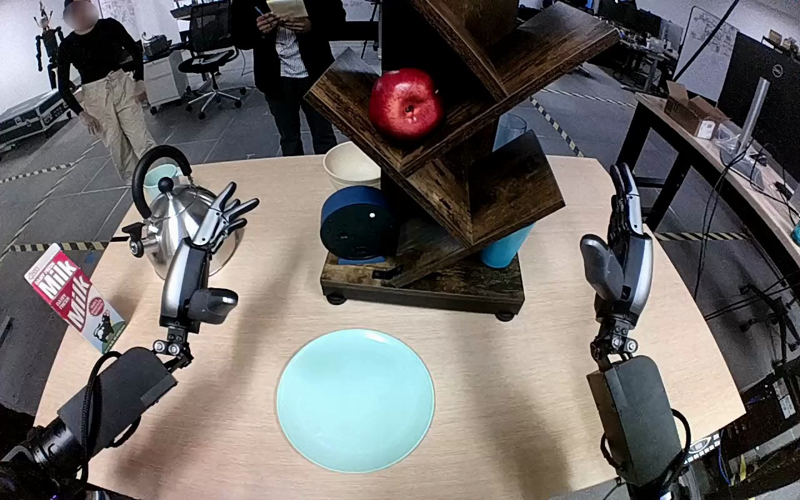

NVIDIA GR1 · 73
Video 73

Visual review action_review.json
{
"prompt_protocol": "humanoid_action_v1",
"prompt_provenance": "visually_authored_from_video_and_initial_frame",
"reviewed_contact_sheets": [
"sheet_001.jpg"
],
"inspected_frame_stride": 2,
"inspected_sampled_frame_count": 60,
"initial_scene": "Forward, downward robot view shows both forearms extending from the lower corners. A blue round clock rests on the left side of the lowest wooden shelf, with an empty teal plate directly in front of the shelf. Both hands are initially open.",
"observed_sequence": [
{
"start_frame": 0,
"end_frame": 18,
"action": "Both hands remain raised and open; blue clock remains on bottom shelf.",
"confidence": "high"
},
{
"start_frame": 19,
"end_frame": 47,
"action": "Left arm reaches toward clock with open fingers and thumb positioned around its round body; right hand remains to the side.",
"confidence": "high"
},
{
"start_frame": 48,
"end_frame": 63,
"action": "Left fingers close around the blue clock, gripping opposite sides of the round body and beginning to remove it from the shelf.",
"confidence": "high"
},
{
"start_frame": 64,
"end_frame": 79,
"action": "Clock travels out from the shelf toward the plate in the left hand; its base is visibly clear of the shelf.",
"confidence": "high"
},
{
"start_frame": 80,
"end_frame": 107,
"action": "Left hand carries clock above teal plate and lowers it toward the center while maintaining its grasp.",
"confidence": "high"
},
{
"start_frame": 108,
"end_frame": 119,
"action": "Left fingers extend and open around the clock as its base settles onto the plate. Clock remains near plate center; hand stays immediately adjacent with thumb overlapping its dark round surface in the camera view. No clear withdrawal occurs.",
"confidence": "high"
}
],
"arm_hand_roles": {
"left": "Active hand grasps the clock around its body, lifts/removes it from shelf, transports and lowers it to plate, then opens fingers beside it.",
"right": "Remains raised at the right side without touching clock, shelf, or plate; provides no task support.",
"coordination": "Single-hand manipulation; no transfer or coordinated two-hand contact."
},
"anatomical_side_evidence": {
"description": "The camera looks forward from behind/above the robot forearms, which enter from their corresponding lower-left and lower-right body-side positions. The active arm extends from lower left, and its inward-facing thumb opposes fingers around the clock; the opposite hand is mirrored on the right. This egocentric arm layout identifies the active hand as anatomical left, consistent with but not inferred solely from the annotation. Full shoulder attachments are outside the image.",
"confidence": "high"
},
"terminal_state": "Blue clock rests on its base near the center of the teal plate. Left fingers are open, with hand immediately adjacent and thumb visually overlapping the clock surface; hand has not withdrawn clear. Right hand remains away from task objects.",
"uncertainties": [
"The final left thumb overlaps the clock surface, so complete separation of every digit and fully stable unsupported settling are not directly shown; opening fingers and placement on the plate are visible."
],
"annotation_discrepancies": [],
"evidence_frame_indices": [
0,
30,
48,
64,
80,
96,
108,
116,
119
],
"selected_execution_status": "success",
"execution_status_basis": "Clock is visibly moved from shelf onto plate near its center, and left fingers open. Success refers to observed destination placement, without claiming a fully withdrawn hand.",
"video_id": "73",
"dataset": "NVIDIA_GR1_100",
"dedicated_review_agent": "review_gr1_73",
"review_source_video": "NVIDIA_GR1_100/73/original/original.mp4",
"source_frame_count": 120,
"source_fps": 20.0,
"native_detail_frames": [
30,
48,
64,
80,
96,
108,
116,
119
],
"world_model_prompt": "The robot uses its left hand to grasp the blue clock from the bottom wooden shelf, lift it free, and carry it over the teal plate. It lowers the clock near the plate's center and opens its fingers, leaving the clock on the plate with its hand still close to the clock. Keep the camera fixed; preserve robot geometry, physically valid joint motion, and normal gripper opening and closing.",
"original_task_instruction": "Use the left hand to pick up blue clock from bottom wooden shelf to center of teal plate.",
"selected_segment": {
"start_frame": 0,
"end_frame_exclusive": 120,
"reason": "Complete original single-task reference; no cropping or trimming requested."
},
"source_video_sha256": "578118020d469fea416da30a3a44d1cfc434d8f88d43156bfbd0b9e2315375f1",
"review_completed_at": "2026-10-13T18:30:47.297300+00:00"
}